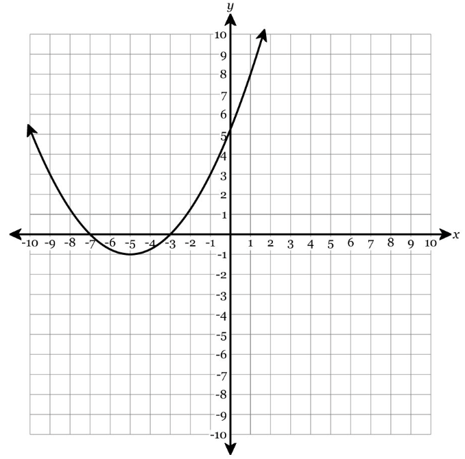
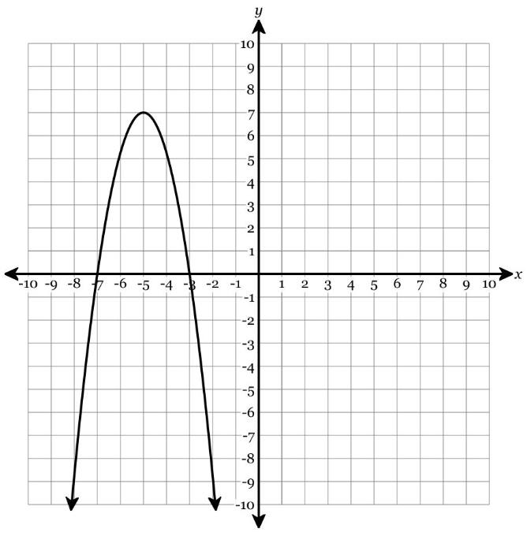

For each function, identify the vertex and whether the vertex represents a maximum or minimum.
The graph of a quadratic function is shown.

Which equation represents a parabola with axis of symmetry \(x=3\)?
The correct choice is b, \(y=(x-3)^2+2\).
In vertex form, \(y=a(x-h)^2+k\), the axis of symmetry is \(x=h\).
Describe the transformation from \(y=x^2\) to \(y=-(x+1)^2+4\). Use the words shift, reflect, and vertex in your answer.
The graph shifts left 1 and up 4, then reflects across the \(x\)-axis.
The vertex is \((-1,4)\), and the graph opens downward.
A parabola has vertex \((3,7)\) and passes through the point \((5,15)\). Write the equation in vertex form.
Start with vertex form using \((h,k)=(3,7)\):
Substitute \((5,15)\):
Answer: \(y=2(x-3)^2+7\)
The graph of a quadratic function has vertex \((-4,1)\) and opens downward. Which of the following could be its equation? Explain your choice.
The correct choice is b, \(y=-2(x+4)^2+1\).
The expression \((x+4)^2\) gives \(h=-4\), the \(+1\) gives \(k=1\), and the negative \(a\)-value makes the graph open downward.
A parabola has vertex \((1,6)\) and passes through \((3,-2)\). A student reasons \(y=a(x+1)^2+6\), then uses \((3,-2)\) to find \(a=-\frac12\).
Identify the error and solve correctly.
The error is using \((x+1)^2\). A vertex with \(h=1\) gives \((x-1)^2\).
Use \((3,-2)\):
Correct equation: \(y=-2(x-1)^2+6\)
A bridge arch is modeled by a quadratic function with vertex \((0,30)\). The arch touches the ground at \((-10,0)\) and \((10,0)\).
Use vertex form with vertex \((0,30)\): \(y=a(x-0)^2+30\).
Use \((10,0)\): \(0=100a+30\), so \(a=-\frac{3}{10}\).
Equation: \(y=-\frac{3}{10}x^2+30\)
Identify the vertex of each quadratic.
For each function, identify the vertex and whether the vertex represents a maximum or minimum.
The graph of a quadratic function is shown.

A quadratic function has vertex \((2,-5)\), opens upward, and has no vertical stretch or compression. Write its equation in vertex form.
No vertical stretch or compression means \(a=1\).
With vertex \((2,-5)\), the equation is \(y=(x-2)^2-5\).
A quadratic function is written as \(f(x)=a(x-h)^2+k\). If the vertex is \((4,-1)\) and the graph passes through \((6,11)\), determine \(a\) and write the function.
Use vertex form with \((h,k)=(4,-1)\):
Substitute \((6,11)\):
Function: \(f(x)=3(x-4)^2-1\)
A football is kicked and its height can be modeled by \(h(t)=-2(t-3)^2+20\), where \(t\) is time in seconds and \(h(t)\) is height in feet.
The table shows values of a quadratic function.
| \(x\) | -1 | 0 | 1 | 2 | 3 |
|---|---|---|---|---|---|
| \(y\) | 8 | 3 | 0 | -1 | 0 |
A company models daily revenue using \(R(p)=-20(p-15)^2+5000\), where \(p\) is the price of one item in dollars.